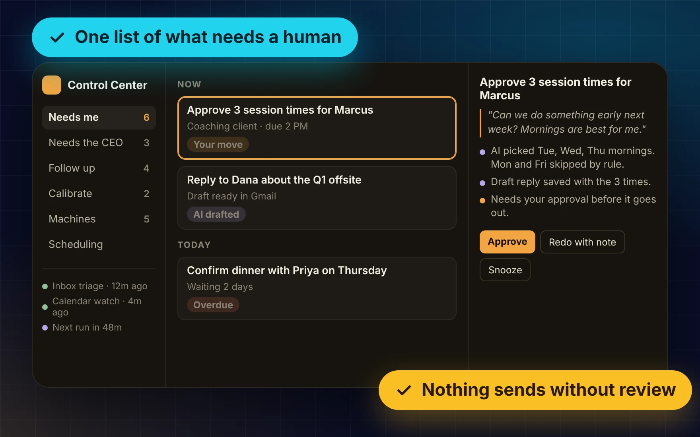

The human side of an AI executive assistant. Scheduled AI runs triage a CEO's inbox and calendar every hour, and this web app is where a person reviews what they prepared, approves it, or steers the next run. Nothing sends on its own.

At an executive coaching firm, scheduled AI runs were already doing real work for the CEO: triaging his inbox, watching his calendar, drafting replies and proposing meeting times. But everything they produced landed as rows in Notion databases. Reviewing it meant digging through pages, and a card made sense only to whoever had followed the thread.
The team needed one place to see what the AI had prepared, decide quickly, and trust that nothing would go out without a person saying yes.
| Runs prepare work | Every hour, scheduled Claude runs triage the inbox, watch the calendar, draft replies and propose scheduling. Each writes a card with context, a due time and what it proposes to do. |
| Shared record | The runs and the app never talk to each other. Notion is the shared record: the app writes a person's decision into the same fields the runs already read, so the runs needed no changes at all. |
| Review | One list sorted by urgency (Now, Today, This week). Titles start with a verb and quote the actual ask, and every card explains who it is about, what happened, what is done and what is needed, with links to the real draft or thread. |
| Act | Approve, pick an option, redo with a note, snooze, comment or mark obsolete. Each action can be undone until the next run picks it up, and items clear themselves once the AI confirms the work is done. |
| Scheduling | A status table for every open scheduling thread, with the CEO's own rules enforced, such as no client sessions on Mondays or Fridays. |
| Run health | A strip shows whether each scheduled run is on time, quiet, or ended with a warning, so a silent failure never hides. |
The interface went through three directions. The first was a calm, clean console. The second was a warm, lamp-lit desk theme with a clear color language and playful touches: a gamified first-use tutorial, badges and an animated lobby. It also had separate inbox-shadowing screens for the CEO's email, his assistant's inbox and his text messages, each designed around how that inbox actually works.
Then the CEO reviewed it. He wanted a plain task manager: one list by urgency, full control over every item, items that clear themselves, and titles that say exactly what to do. Inbox screens became simple warnings about drafts going stale, since the drafts themselves are better handled in the email client.
The third version is organized by who acts next: Needs me, Needs the CEO, Follow up, Calibrate, and Machines. It kept the color language and cut the decoration. The little personality that remains is tied to live data, like an indicator that only lights up when something truly cannot wait.
Color tells you whose move it is. Amber is yours, lilac is what the AI did, green is settled. If something is amber, a person can act on it.
Let's build intelligent systems that eliminate manual work and scale without headcount.